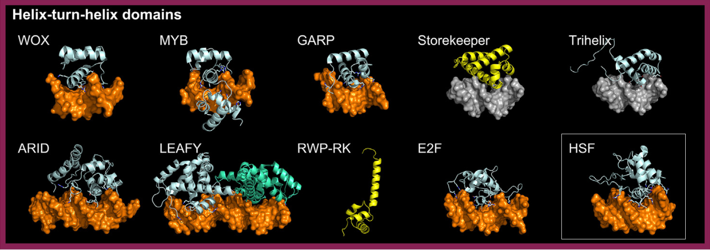

Heat Shock Factors (HSFs) are conserved transcription factors that regulate the heat stress response. Their HTH domain includes a recognition helix that directly interacts with DNA. In plants, HSFs form a single family but play a crucial role in thermal adaptation and stress tolerance[src].